5.5.4. ЭЦП на эллиптических кривых
5.5.4. ЭЦП на эллиптических кривых
ЭЦП на эллиптических кривых − это одни из наиболее перспективных и современных классов алгоритмов данного типа. К этому классу относятся стандарты ЭЦП России (ГОСТ Р 34.10−2001), США (DSS) и ряда других стран. Они отличаются сравнительно небольшой длиной по сравнению с ЭЦП RSA и Эль-Гамаля при сохранении одного уровня криптостойкости. Рассмотрим один из вариантов схемы DSS, так как для нее указаны методы выбора параметров эллиптической кривой. Стандарт допускает использование полей двух видов, над которыми задается эллиптическая кривая. Это простые поля Галуа и поля характеристики 2, т. е. по модулю 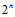.
В качестве простых модулей рекомендуется выбирать так называемые обобщенные числа Мерсенна (числа Мерсенна это числа вида 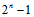, обобщенные числа Мерсенна это числа Мерсенна которые можно представить в виде суммы первых членов возрастающей геометрической прогрессии: 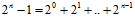), приведенные в табл. 5.8.
Стандарт определяет вид кривой, которую необходимо использовать, и базовые точки на них. Допускается самостоятельная генерация базовых точек на заданной кривой, но тогда придется самостоятельно решать задачу определения порядка точки эллиптической кривой.
Для приведенных в таблице простых модулей эллиптических кривых используется кривая, определяемая уравнением
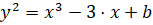
над полем 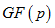, коэффициенты b также задаются для каждого размера поля.
Таблица 5.8
Модули, рекомендованные для ЭЦП DDS
Кривая |
Модуль p |
P-192 |
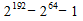 p=6277101735386680763835789423207666416083908700390324961279 n=6277101735386680763835789423176059013767194773182842284081 b=64210519e59c80e70fa7e9ab72243049feb8deecc146b9b1 x=188da80eb03090f67cbf20eb43a18800f4ff0afd82ff1012 y=07192b95ffc8da78631011ed6b24cdd573f977a11e794811 |
P-224 |
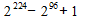 p=26959946667150639794667015087019630673557916260026308143510066298881 n=26959946667150639794667015087019625940457807714424391721682722368061 b=b4050a850c04b3abf54132565044b0b7d7bfd8ba270b39432355ffb4 x=b70e0cbd6bb4bf7f321390b94a03c1d356c21122343280d6115c1d21 y=bd376388b5f723fb4c22dfe6cd4375a05a07476444d5819985007e34 |
P-256 |
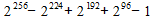 |
P-384 |
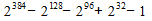 |
P-521 |
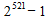 |
Полный список параметров эллиптических кривых разных семейств рекомендованных к практическому применению, можно найти по адресу:
http://csrc.nist.gov/publications/fips/archive/fips186-2/fips186-2.pdf.
Алгоритм вычисления и проверки ЭЦП на основе эллиптических кривых представлен ниже. Он отличается от ранее рассмотренных алгоритмов с использованием эллиптических кривых тем, что для его реализации требуется точное знание порядка базовой точки эллиптической кривой (размер группы для которой точка является образующим элементом).
Нахождение порядка базовой точки эллиптической кривой сложная задача, поэтому в рамках данной практической работы мы воспользуемся одной из рекомендованных эллиптических кривых вместе с базовой точкой на ней, для которой точно известен порядок. Алгоритм ЭЦП на основе эллиптических кривых состоит из следующих шагов.
1. Отправитель выбирает секретный ключ 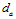 как целое число 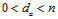, где n − порядок базовой точки на эллиптической кривой, и вычисляет открытый ключ  , который публикуется и доступен другим пользователям, где G − базовая точка эллиптической кривой.
, который публикуется и доступен другим пользователям, где G − базовая точка эллиптической кривой.
2. Отправитель выбирает случайное число 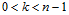 и вычисляет, 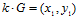 , если 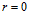, то выбор числа k необходимо повторить, потом он находит обратное 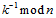 и вычисляет хэш-функцию 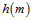 от подписываемого сообщения.
3. Отправитель вычисляет 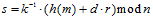 , если s=0, то перейти к шагу 1, ЭЦП сообщения является пара  , которая присоединяется к сообщению m и пересылается получателю.
, которая присоединяется к сообщению m и пересылается получателю.
4. Получатель проверяет принадлежат ли  интервалу (1, n-1) и вычисляет хэш-функцию h(m) от принятого сообщения.
интервалу (1, n-1) и вычисляет хэш-функцию h(m) от принятого сообщения.
5. Получатель вычисляет 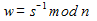 и находит 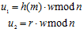.
6. Получатель вычисляет 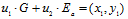, если в результате получилась точка в бесконечности, то подпись отвергается, иначе находится 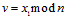 , далее проверяет выполнение равенства 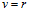, в случае его выполнения подпись принимается как верная, иначе отвергается.
7. Доказательство. Если s верна, т. е.  , то 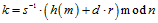 откуда следует 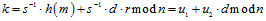 и 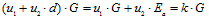 , поэтому если
, то 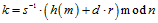 откуда следует 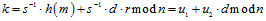 и 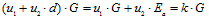 , поэтому если  , то подпись 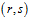 верна.
, то подпись 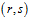 верна.